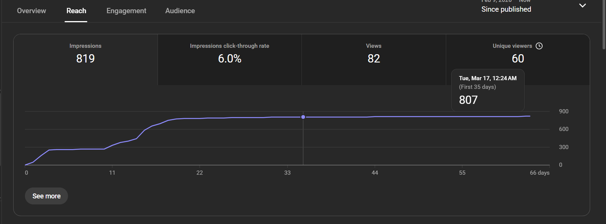
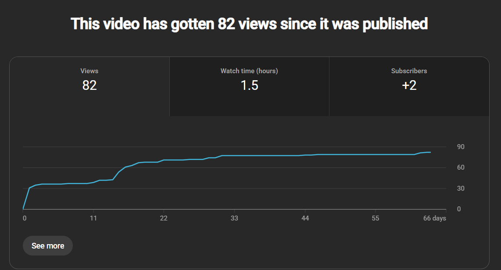

The documentary revolves around the Nepali Revolution that occurred just last year–a massive revolution that had the goal of overthrowing their country’s corrupt government. This way, the documentary will still relate with the Filipino youth by giving insight on what led to the revolution and what struggles may have influenced their uprising.
Narrated, contains graphics, and contains interviews done by news agencies in Nepal regarding the uprising
To show the importance of educated voting
To show the difference between a ‘peaceful’ and a ‘forceful’ revolution


Quarter 3 Video Analytics